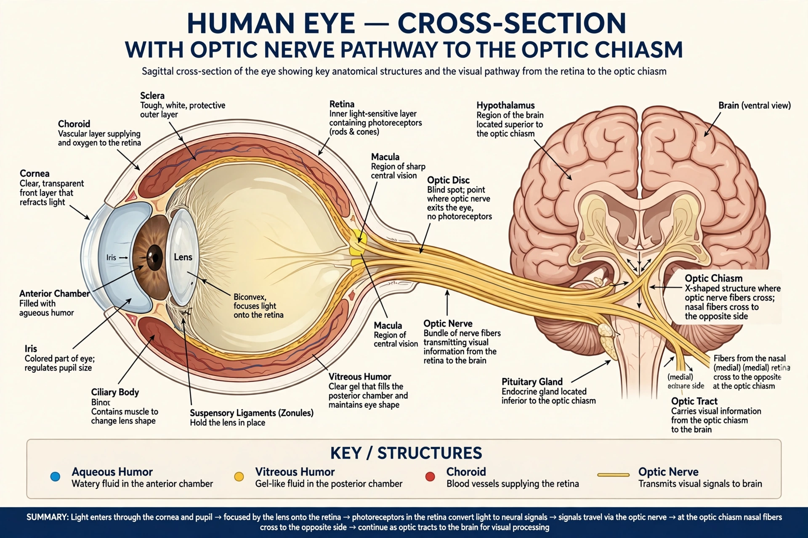

From Wikipedia, the free encyclopedia
| Optic nerve | |
|---|---|
 The optic nerve carries visual signals from the retina | |
| Cranial nerve | II (second cranial nerve) |
| Innervates | Visual system (special sensory) |
| Origin | Retinal ganglion cells |
| Course | Orbit, optic canal, optic chiasm |
The optic nerve, also known as cranial nerve II, is a paired nerve that transmits visual information from the retina to the brain. It is composed of the axons of retinal ganglion cells — about 1.2 million fibres in humans — together with supporting glial cells. Embryologically the optic nerve is an outgrowth of the forebrain (diencephalon), and unlike peripheral nerves it is myelinated by oligodendrocytes and surrounded by meninges, making it part of the central nervous system.
The nerve leaves the back of the eyeball at the optic disc (the anatomical blind spot, where no photoreceptors are present), passes through the orbit and the optic canal in the sphenoid bone, and enters the cranial cavity. The two optic nerves meet at the optic chiasm, where fibres from the nasal half of each retina cross to the opposite side, so that each cerebral hemisphere receives the contralateral visual field. Beyond the chiasm, fibres continue as the optic tracts to the lateral geniculate nucleus of the thalamus and onward via the optic radiations to the visual cortex of the occipital lobe.
Damage to the optic nerve causes vision loss in the affected eye. Common disorders include optic neuritis (often associated with multiple sclerosis), glaucoma, in which raised intraocular pressure progressively damages the nerve head, ischaemic optic neuropathy, traumatic injury, and compression by pituitary tumours, which characteristically produce bitemporal hemianopia by damaging crossing fibres at the chiasm. Swelling of the optic disc (papilloedema) is an important sign of raised intracranial pressure, visible on examination of the fundus.
See also: Retina · Optic chiasm · Cranial nerves · Visual system